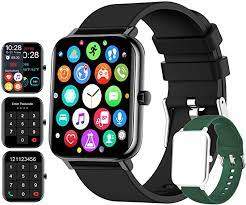

A internet das coisas chegou ou mundo, e está ganhando cada vez mais espaço nos objetos do nosso dia a dia
Smartwatch ou Relógio inteligente
Smartwatch é um relógio digital que apresenta diversas outras funcionalidades para além de apenas ver as horas e marcar um despertador. Ele suporta diversos aplicativos e alguns modelos têm tela sensível ao toque, o que deixa tudo muito mais prático.

A comodidade que um smartwatch te possibilita no dia a dia é incontestável. O tempo é um recurso escasso atualmente, e com essa tecnologia você é capaz de economizá-lo.
Até aqui já deu pra perceber como o smartwatch pode melhorar seu cotidiano.
Benefícios de ter um smartwatch no seu dia a dia
Uma das vantagens desse benefício para smartwatch é que você pode ignorar facilmente uma ligação, principalmente quando está dirigindo ou ocupado com outra tarefa específica.